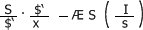
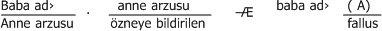

Bu bölümdeki metinler önemli oldukları ama tamamını da çevirmemiz bu çalışmanın sınırları içerisinde imkânsız olduğundan bu öğretilenler bölümünde özetlenen konulardır. Lacan'ın tamamı çevrildiğinde ya da bu kitabın ikinci baskısında belki uzatılabilirler.
Psikanalizde Dilin ve Sözün Alanı ve İşlevi
(26-27 Eylül 1953 Yılında Roma Üniversitesi Psikoloji Bölümü'nde Sunulan Rapor.)
1) Öznenin psikanalitik açıdan kendini gerçekleştirmesinde boş söz ve dolu söz.
Psikanalizin amacı iyileştirme, yetiştirme ya da araştırma olabilir ama bunlar için elinde bir tek araç vardır: Karşındakinin sözü. Bu durumun sıradanlığı onun ihmal edilmesi anlamına gelmez. Neden mi çünkü her söz yanıt bekler.
Şunu göstermeye çalışacağız. Değil mi ki karşıda bir dinleyen vardır, sessizlikle bile karşılaşsa yanıtı olmayan söz yoktur, psikanaliz sırasında sözün işlevinin çekirdeği budur.
Sözün bu işlevinin ne olduğunu psikanalist bilmezken sözün çağrısının daha fazla etkisi altında kalarak ilk önce bir boşluğu dinler. Ve bu boşluğu kendinde bulup boşluğu dolduran bir gerçekliği de sözün ötesinde arar.
Böylece psikanaliz öznenin davranışını, öznenin ne demediğini bularak çözümlemeye çalışacaktır. Ama özneye bunun itirafını yaptırmak için bunun üzerine de konuşması gerekir. O zaman sözü yeniden bulur. Ama kendi yokluğunun algıladığı yankısı karşısında, sadece sessizliğinin ortaya koyduğu bozgunluğa yanıt vermekten başka bir şey yapamadığı için sözü de kuşkulu bir söz olarak kalmıştır.
Peki, öznenin söylediklerinin boşluğunun ötesine yaptığı bu çağrı nedir acaba? İlke olarak hakikate yapılan bir çağrıdır. Daha alçakgönüllü yapılan çağrılar bunun yanında hiç kalır. Aslında en başından beri ve tamamıyla bu çağr,ı boşluğa yapılan bir çağrıdır. Narsisizmin anıtını işin içine karıştıracağı, kendini beğenmişliğini ortaya koyarak başkasını baştan çıkarmaya çalışacağı, ne olduğunu kendinin de tam bilmediği bir boşluğa yapılan bir çağrıdır bu. "Hep bildiğimiz iç gözlem değil mi bu! diyerek orta malı düşüncelerle yetinenler şimdi de oturup bunun tehlikelerini saymaya başlayacaklardır. Bu tür bir çağrının çekiciliğini daha önceden de tattığı için bunu yeniden kullanacaktır, diye düşüneceklerdir. Ne yazık ki bu gibilerinin kaybedecek zamanları yoktur. Hastayı kalkıp sizin divanınıza yollayıp bu derin ve güzel itirafları sizin duymanızı isterler.
Aslında bir psikanalist deneyim edinirken ilk önce bu tür çağrılarla karşılaşacaktır. Ve psikanaliz gibi bir bilimde iç gözlemden söz etmesi çok tuhaf kaçar.
2) Jean Hyppolite'in Freud'un "İnkâr Kavramı (Verneinung) Yorumu ve Buna Yanıt (1954)
(Lacan'ın Freud'un Teknik Yazıları Üzerine Saint Anne'da verdiği ilk seminerdir.)
Umarım Bay Jean Hyppolite'in lütfedip gelerek bu parlak sunumu bizlerin önünde yapması hem sizin hem onun nezdinde benim rica ederek onu buraya çağırmamdaki ısrarın ne kadar yerinde olduğunu gösterecektir.
Bir kere daha Freud'un bu metninden haberdar olmayan birisinin bile bu metnin her ne kadar iş olsun diye yazılmış, o zamana ve o yere özgü görünse de yorum disiplini adını verdiğimiz yönde hiç tükenmeyen zengin anlamları bulundurduğunu kanıtlamaz mı? Matematikçilerin sonsuz yüzeysel diyecekleri iki boyutlu metinlerden değildir bu. Zaten var olan bir söylemde değeri önceden belirlenmiş metinlerdir bunlar. Oysa Freud'unki bir söze aracı olan bir metindir ve bu söz de hakikatin yeni ortaya çıkışından başka bir şey değildir.
Bu tür metinlere yorumumuzun bütün kaynaklarını uygulamayı uygun görüyorsak, bunun nedenini hiç de öyle bunu yazmış olan kişinin özellikleri üzerine sorular sormak olarak görmüyoruz. Burada bunun örneğini gördünüz, edebiyat ya da tarih eleştirilerinde metinleri ille de yazarla ilişkileri içerisinde incelemek doğru dürüst bir psikanalistin gözünde metne direnmekten başka bir şey değildir. Oysa bizim aracımız metnin bize sorduğu sorulara onun yanıt vermesini sağlamak, böylece metni gerçek bir söz olarak görebilmektedir; kendi terimlerimizi kullanacak olursak buna "aktarma değeri adını da verebiliriz.
Elbette burada metnin yorumlanması gerektiğini varsaymaktadır. Bir mesajın anlaşılması için kendi içinde geliştirdiği anlama ilkelerini uygulamaktan daha iyi bir eleştirme yöntemi olabilir mi ki? Metnin sahiciliğini en akıllı bir biçimde ancak böyle anlayabiliriz.
Aslında dolu söz, sözünü ettiği, konu ettiği şeyle özdeş olması ile tanımlanır. Ve Freud'un bu metni Bay Hyppolite'ın da açıkça gösterdiği gibi bizim psikanalitik alanın transpsikolojik özellikler gösterdiği tezimizi kanıtlamaktadır.
3) Freud'un "Şeyi
(7 Kasım 1955'de Viyana'daki Nöropsikiyatri kliniğinde sunulan konferansın geliştirilmiş şeklidir.)
Freud'un Viyana'da doğduğu evin önüne Viyana Belediyesi tarafından bir onur plaketi konulmasını Lacan kınamakta ve bu plaketin psikanalistler tarafından hazırlanmamasını psikanalistlerin Freud'a ihaneti olarak görmektedir.
Bu uygulamanın zamanının ve yerinin belirtilmesi.
Viyana'nın opera aracılığıyla sesini yeniden duyurmaya hazırlandığı bu günlerde her zamanki görevini heyecan verici bir tarzda yeniden ele alarak kültür açısından farklılıkları toparlamayı konserler aracılığıyla Freud'un "şeyi başardığı bugünlerde kendimi dışarıdan gelmiş biri olarak görmüyorum. Bu sefer Kopernik'in adıyla karşılaştırılabilecek bir bilgi devriminin gerçekleştirilmiş olduğu bir şehri seçmiş bulunuyorum: Freud'un buluşunun ebedi yeri burasıdır. Ve şunu söyleyebiliriz ki Freud'un buluşu, insan varlığının asıl merkezinin, bütün bir hümanist geleneğin zannettiği yerde olmadığını göstermiş olmasıdır.
Hiç kuşkusuz kimse kendi ülkesinde peygamber olmasa da peygamberlere karşı duyarsız olmayan ülkelerde bile ne yazık ki ölümlerinden sonra öyle bir an gelir ki artık onlardan söz edilmez. Böyle bir durumda gündeme gelmesi gereken güçleri biriktirmek yabancılara kalır.
İşte bu yüzden benim buraya gelerek Freud'a bir dönüş gerektiğini müjdelememin yabancı olmamla da ilgisi vardır: Burada yanımızda duran Dr. Alfred Winterstein Viyana Psikanalitk Derneği'nin başkanı olarak üzülerek bir skandala gönderme yapmıştır. Aslında bu skandal Freud'un kahramanca geliştirdiği eserini yazdığı bu eve konulan onur plaketini ona Viyanalı vatandaşları tarafından verilmiş olması değildir; skandal, geçimlerini Freud'dan sağlayan uluslararası derneklerin böyle bir plaketi koymaya tenezzül etmemiş olmalarıdır.
Bu kusuru bir belirti olarak almalıyız. Çünkü ortada bir ihanet vardır. Freud yer olarak burada sadece geçici bir misafirdi ama özenle korumamız gereken bize bıraktığı alan öyle berbat bir noktaya gelmiştir ki Freud'a dönüş ilkem, şu andaki psikanalizin gelmiş olduğu noktanın tam tersine geçmek gerektiğidir.
Freud'un mesajının ilk sesinin Viyana çanlarıyla birlikte yankılanarak uzaklara yayıldığı zamanlardan bu yana köprünün altından çok sular geçti. Birinci Dünya Savaşı, bu çan seslerini sağır kılarak zaten az kalsın herkesi boğuyordu.
Tam yeniden çalmaya başlamışlardı ki ikinci savaşın kışkırtmasıyla birçok insanın harcandığı bir noktaya gelindi. Ve çanlar sadece bu parçalanmalar için çaldı. Saldırıların hiç de tesadüf olmayarak nişan aldıkları Yahudilerin çoğu oradan oraya dağılırken Freud'un sesi bize bu çanlarla çatışmaların gürültüsünü, nefretin zehrini, savaşın telaşlı nefesini verdiği sıralarda geldi. Onların bindiği tren artık bizim dünyamızın sınırlarında duramazdı. Onlar öyle bir yere gittiler ki bu ülkede tarihin anlamını kaybettiğini bile söyleyemeyiz. Çünkü yankılana yankılana tarih orada sınırını bulmuştur –tarihin orada yok olduğunu zannetmek bile bir hatadır, çünkü birkaç yüzyıl içerisinde düğümlene düğümlene çok kısa bir ufuk çizgisinde uçurumu daha da ağır hale gelmiştir– ama tarihin kategorik bir ifade ile inkâr edildiği bir ülkedir bu. Oradaki bütün girişimlerin üslubunda kültürün bu tarihdışılığı kendini gösterir. Söz konusu ülke kuzey Amerika birleşik devletleridir.
Bu kültürün oluşturduğu toplumda takdir edilmek için yapılacak olan bu topluma asimile olup bu tarih dışılığa katılmaktır
4) Bilinçdışında Harfin Üstelemesi ya da Freud'dan Bu Yana Akıl (1957)
1- Harfin Anlamı
Başlığımız bile psikanalitik deneyimin bilinçdışında bulduğu özelliğin, sözün ötesinde dilin yapısında olduğunu gösterir. Bunun üzerinde durmamızın nedeni, zihinlerimizi hâlâ bilinçdışının içgüdülerin yeri olduğunu ortaya süren düşünceden arıtıp uyanık tutmaktır.
İyi ya, harf derken bunu nasıl anlamalı burada? Basbayağı harfi harfine almalıyız.
Harf derken somut söylemin dilden ödünç aldığı maddi dayanağı kastediyoruz. Bu basit tanımlama dilin, konuşan özneye hizmet eden vücut ve ruh işlevleriyle karıştırılmaması gerektiğini varsaymaktadır.
Bunun nedeni de şudur: Yapısı ile birlikte dil, her öznenin kendi gelişimi içerisinde ona girdiği andan çok daha öncesinde mevcuttur.
Bu arada üzerinde duracağımız bir nokta da şudur: Beyindeki sadece anatomik lezyonların neden olduğu afaziler burada harf adını verdiğimiz tetikleyici etkinin ikili yakasıyla iki değişik kusurun anlam yaratmada ortaya çıkmasını sağlamaktadır.[22]
5) Psikozun Olası Bir Tedavisi (1958)
IV. Schreber'in Tarafında
(Şimdi Schreber'in hezeyanın öznelliği içerisine girebiliriz.)
Daha önce söylediğimiz gibi fallusun anlamı öznenin hayalleri içerisine baba benzetmesi olarak girer.
Bilinçdışının oluşumları üzerine bu yılki seminerlerimizi izleyenlerin aşina olduğu bir formülü burada tekrar hatırlatacağız, "tetikleyicinin ekonomisinde bunun çok kesin bir anlamı vardır. O da şudur:
Tetikleyicinin ikamesi ya da metafor formülü:

Burada büyük "Sler tetikleyicidirler. "X bilinmeyen anlamdır ve "s de metafor aracılığıyla gündeme getirilen anlam olup tetikleyiciler zincirinde "s nin "S1in yerine gelmesiyle oluşur. "S1in burada gösterildiği çizgi altına girerek yok sayılması benzetmenin başarısının koşuludur.
Bu baba adı benzetmesine de uygulanır. Burada da annenin yokluğu işlemiyle ilk önce sembolize edilen yere babanın ikame edilerek gelmesiyle oluşur.

Şimdi öyle öznel bir konum düşünelim ki baba adının çağrısına karşılık olarak gerçek babanın yokluğu değil de – böyle bir yokluk tetikleyicinin varlığı ile birlikte epey uyum gösterir. Tetikleyicinin kendisinin eksikliği söz konusu olsun.
Böyle bir kavrayışa hiçbir şeyin bizi hazırlamadığını söyleyemeyiz. Büyük başkasında tetikleyicinin varlığı, sıradan yaşantısında özneye kapalı bir varlıktır. Çünkü sıradanlıkta zaten bastırılmış olarak (verdrängt) büyük başkası orada durmakta ve oradan anlam içerisinden yeniden canlandırılmak için ısrar etmekte; bunun için de tekrar otomizmine başvurmaktadır (wiederholungszwang). Freud'un birçok metninde kullandığı bir terimin bastırılmış olandan farklı bir bilinçdışı işlevini belirtmek için epey açık bir şekilde kullandığını belirtelim. Oradan aldığımız bu terimi psikozlar seminerinin çekirdeğinde kanıtladığım bir noktaya, psikoz fenomeniyle karşılaşınca Freud'un düşüncesinin içerdiği noktaya getirelim. Bu terim Verwerfung'dur.
Freud her türlü onaylamanın bejahung bir yüklem yargısı olduğunu göstererek bunun tersi olan varoluş yargısının inkâr olduğunu "verneinung göstermişti. Bu "verneinungun analitik deneyin öğesi olarak ortaya çıkarttığı her durumda yok sayılan tetikleyicinin, aslında bir yerlerde bulunduğu itiraf edilir.
Demek ki temel "bejahung da tetikleyicilere dayanır. Freud'un birçok metni her şeyden önce de Fliess'e yolladığı mektupların 52.'sinde işaret adıyla kastettiği onaylamanın anlaşılmasını sağlar.
"Verwerfung bizim için demek ki "tetikleyicinin dışa atılması olarak ele alınacaktır. Baba adı çağrıldığı zaman demek ki "büyük başkasında, bunun nasıl olduğunu sonra göreceğiz, sadece bir delikten başka bir şey bulunmayabilir. Bu delik benzetme etkisinin eksikliği ile fallik anlamın yerine karşılık gelen bir başka deliği kışkırtacaktır.
Sembolik eşitlik olarak "kız=fallusun İngilizcesi olan "girl=phallus Bay Fenichel'e, biraz karışık olmasına rağmen dikkate değer bir deneme ilhamı vermiştir. Bu eşitliğin kökeni hayali yollardan geçer. Bunlar da çocuğun arzusunun annenin varlıkyoksunluğuyla özdeşleşmesini sağlar. Elbette annenin kendisine de bu, yoksunluğun oluştuğu sembolik yasa aracılığıyla çok önceden girmiştir.
Hoşlarına gitmese de kadınlar gerçek dünyada aile ilişkilerinin temel yapıları içerisinde alışveriş nesnesi olarak iş görürler ve yeri geldiği zaman bu durum hayali olana da geçer. Bu arada sembolik düzende paralel olarak kendisini aktaran şey ise fallustur.
6) Tedavinin Yönlendirilmesi ve İktidarın İlkeleri
(10-13 Temmuz 1958, Royaumont'daki kollokyumda verilen bildiri.)
Kör bir yönlendirmeye hep açık olan bir iktidarın kötü niyet de içeren ilkesine doğru gelmiş bulunuyoruz. Bu iktidar iyilik yapma iktidarıdır, zaten hiçbir iktidarın başka bir amacı olamaz ve bu yüzden de hiçbir iktidar son bulamaz. Ama burada söz konusu olan şey başka şeydir, tek gerçek olan hakikatin etkileri üzerine hakikattir. Oedipus bir kere bu yola girdi mi artık iktidardan vazgeçmiş demektir.
Peki, tedavinin yönlendirilmesi nereye gitmektedir? Belki de bu soruya doğru dürüst bir yanıt vermek için tedavi yönlendirmede kullanılan araçları sorgulamak gerekir.
Şuna dikkat edelim:
1) Söz bütün iktidarlara sahip olduğu gibi tedavinin özel iktidarlarına da sahiptir.
2) Kurallar koyduğumuz zaman özneyi ille de tutarlı bir söyleme ya da dolu bir söze yöneltmekten uzak kalmalıyız ama bunları deneme özgürlüğünü ona vermeliyiz.
3) Bu özgürlük onun en az hoşgörüyle karşılayacağı bir özgürlüktür.
4) Psikanalizde talep tam da parantez içine alınan şeydir, analistin bu taleplerden herhangi birini yerine getirmesi söz konusu olamaz.
5) Arzunun itirafına hiçbir engel kalmayacağı için özne bu yöne doğru yöneltilmeli ve hatta kanalize edilmelidir.
6) Bu itirafa direnme son çözümlemede, arzuyla sözün uyuşmazlığından başka hiçbir işe yaramaz.
Bu önerilerin benim söylemimde yer alması birçok kişiyi, hatta benim seminerlerime gelen birçok kişiyi şaşırtacaktır.
Psikanalistin aslında birazcık da olsa talebe yanıt vermek için içi gitmektedir.
Dahası öznenin iyileşme talebi biçiminde açığa çıkan isteğine nasıl olup da yanıt verilmeyebilir? Haklı ya da haksız olarak otoritemizin onun bizde varsaydığı bir söylem ufkuna uygun olarak bizden bunu beklemeye hakkı da vardır.
Kendi kendimize ördüğümüz bu "Nessus gömleğinden[23] bizi kim kurtaracaktır: Psikanalist ortalığa yayılmış kurallara bakılırsa talebin bütün isteklerine yanıt vermektedir. "Psikanalitik Edebiyat adlı Augeias ağıllarının[24] birikmiş gübrelerini kim süpürecektir?
Yorumun sadece imaya dayalı erdemini yeniden bulup, varlığın ıssız ufkunu yeniden keşfedebilmesi için, psikanalist, bu bataklığın üzerinde Leonardo da Vinci'nin Aziz Jean tablosunda yaptığı gibi parmağını kaldırarak hangi sessizliği kendine ilke edinmelidir?
Söz konusu olan arzuyu ele geçirmekse ve arzu ancak harfi harfine ele geçiriliyorsa, göksel kuş olarak onu belirleyen harfin tuzaklarıysa, kuşçudan nasıl olur da her şeyden önce harflerden yani edebiyattan anlamasını bekleyebiliriz?
Freud'un yapıtında edebiyat o kadar önemli bir yer tutar ki aramızda Zürihli bir edebiyat profesörünün onun bu yönünü irdelediğini ve bunun önemini kim anlıyor?
Bunlar sadece göndermeler. Daha ileri gidelim, (psikanalistin kendi varlığının) kendi arzusuyla ilgili olanın ne olduğunu sorgulayalım...
Son bir bölünmeyle özne kendini logosa eklemiştir ve buraya yazılan son bölümde Freud varlık boyutlarına ulaşmış olan eserinin son ucunu bize vererek sonsuz (bitmez) analiz çözümünü önerirken ölüm oraya hiç sözcüğünü eklemiştir.
7) Kant ile Sade (1962)
[...]
Sade'ın fantazmının Hıristiyan etiğinin izleyicilerine daha yakın olduğu bizim yapı değerlendirmelerimizle çok daha iyi anlaşılır. Ama Sade benim yakınım olmayı her zaman reddetmiş bir kişidir.[25] Bunu bizim de bu durumu reddetmemiz için değil bu reddetmenin anlamını çıkartabilmek için hatırlatmak gerekir.
Biz Sade'ın kendi kötülüğüne orada bir yakınıyla karşılaşacak kadar yakın olmadığını düşünüyoruz. Bu özellik zaten birçok kişiyle ortak olarak paylaştığı, öncelikle Freud'da da bulunan bir özelliktir. Bunlardan haberdar olan kimselerin bile Hıristiyan buyruğunun önünden geri kaçmalarının tek nedeni budur.
Sade idam cezasını reddeder; bu bizim için çok önemli bir sınamadır. Çünkü bu cezanın reddinin mantığı olmasa da tarihi bize onun Hıristiyan bir erdem olan yardımseverliğini kanıtlamak için yeterlidir. Sade demek ki burada durmuştur; burada arzunun yasa ile düğümlendiği o noktada durmuştur. Eğer Sade'daki bir şey onu yasaya bağlı kıldıysa, Aziz Pavlus'un ölçüsüzce günahkâr olmayı sağlayan fırsatını orada yakaladıysa kim ona taş atabilir ki? Ama Sade daha ileriye gitmemiştir.
Bunun nedeni herkes gibi onda da nefsinin zayıflığından ileri gelmez, zihni çok aceleci davrandığı için yanılmıştır. Cinayeti övmek sadece ve sadece dolambaçlı olarak yasaya bağlılığın itirafıdır. Kötülük yapmak yüce varlığı korumayı sağlar. Bu tipik iktidar düşüne güvenirsek hata olur.
Açıklama:[26]
Nurullah Ataç "Ahlak konusunda yazdığı makaleye "Ahlak deyilince yine kimin başını yakacaklar diye korktuğunu belirterek başlar. Ahlak buyruklarının birilerini susturmak için ortaya çıktıklarını gösteren güzel bir tutumdur bu. Yazısının sonuna doğru da "Marquis de Sade da ahlakçıdır diye de belirtir.
Hiç kuşkusuz Marquis de Sade da değişik formüllerle dile gelen bir tür kötülük ahlakı geliştirmiştir. Ama bir bakıma da aynı dönemde Kant'ın geliştirdiği ahlakı andıran bir yanı vardır: Sade öznenin hiç duygusal davranmamasını istemektedir. Özne tepeden inme buyruklarla hareket etmelidir. Kant da ahlakın buyruğunun patolojik olmasını kabul edemez. Duygulanmaya hiç yer vermeden ahlak buyruklarına boyun eğmek gerekmektedir. 20. yüzyılda Nazi deneyimi yaşayan Almanya'da bir sürü cinayet işleyen Edelmann, kendisinin Kant ahlakına uyarak bunları işlediğini Nuremberg mahkemelerinde itiraf ettiğinde ortalık karışır. Hannah Arendt onun yalan söylemediğini belirterek "kötülüğün sıradanlığı kavramını geliştirirken, M. Horkheimer ve T. Adorno, Sade ile Kant arasında bir paralellik kurarlar. Hemen hemen aynı yıllarda Lacan Sade'ın bütün eserleri için özel olarak kaleme aldığı bir incelemede –ki yayınlanmayacaktır– bu iki düşünürü beraber okur.
Kant'ın Pratik Aklın Eleştirisi 1788 tarihli bir metindir: Sade ise Yatak Odasında Felsefe'yi (La Philosophie dans le boudoir) 1795'te yayınlamıştır. Tarih açısından denk gelen bu aralıkta da Fransız Devrimi gerçekleşmiştir. Lacan, Aristoteles kökenli doğayı kaynak alan ahlak anlayışına karşı geliştirilen Kant ile Sade ahlak anlayışlarını da yetersiz bulacak ve psikanalize özgü bir arzu anlayışını Antigone den yola çıkarak geliştirecektir. Antigone her şeyden önce güzeldir, alımlıdır. Koro onun çekiciliğini vurgular. Eski Yunan'da –kalos kagathos– hem güzel hem iyi bağı vardır. Yunan kültüründe "agalma karşımızdaki kişinin içinde bir yerlerde var olduğunu sandığımız çekici yön, insanı heykel gibi durduran bir şeydir. Arzu, Lacan'a göre "agalmaya yönelir. Ama bu sadece güzel olanda mı vardır? Alkibiades Yunanistan'ın en yakışıklı delikanlısı, Sokrates gibi çirkin birinde bu "agalmayı bulup onun peşinden gitmektedir? Transfer üzerine yaptığı seminerin ardından Lacan bu arzuya yönelir.
9) Bilim ve Hakikat (1 Aralık 1965)
Şunu söylemeden geçemeyeceğim: Din ve büyünün tersine bilimde bilgi, iletilebilir.
Ama şunun üzerinde de ısrarla durmak lazım: İletişimin gerçekleşmesinin nedeni, böyle gelmiş böyle gider diye alışkanlığa boyun eğmekten kaynaklanmaz. Bilimde bilgiye atfedilen mantıklı deyiş biçimi iletişim tarzını da içermektedir, tam da bu tarz özneyi kendisine iliştirir, bağlar.[27]
Psikanalizde iletişim konusunun ortaya çıkardığı ilk sorun budur. Bunun bilimsel değerinin anlaşılmasına yönelik ilk engel şuradan ileri gelir: Hakikatle olan ilişkisini neden olarak bütün maddi yanlarıyla ele alırsak çalışmanın çerçevesinde bu ilişki ihmal edilir.
Bugün yola çıktığım noktaya tekrar dönerek sözlerimi bitireyim: Öznenin bölünmüşlüğü, bu nokta, bir düğümdür.
Freud'un bu düğümü nasıl çözdüğünü hatırlatalım: Fallusun gerçek doğasını ortaya çıkaran annede penis eksikliği olayıyla. Özne burada Freud'un dediği gibi gerçeklik karşısında bölünür; bir yandan gerçeklikte bir uçurumun açıldığını görür ve bir fobiye sığınarak bundan kurtulmaya çalışır; öte yandan fetişleri bu yüzeye koyup kapatarak penisin varlığını değişik bir yere götürse de yine korumaya çalışır.
Bir yandan [penis yok]un [yok]unu oradan çıkarıp paranteze alarak bilgi yok'a aktaralım. Bu da aslında nevrozun [tereddüt yok]uyla aynı şeydir. Öte yandan hakikat noktasını özneye hemen hemen her saat gösteren bu kum saatinin ondaki etkinliğini de tanımazlıktan gelmeyelim.
Bu arada bütün bunlardan şu çıkıyor: Fallusun kendisi öznede gönderme yaptığı eksiklik noktasından başka bir şey değildir.
Bu gönderme noktası aynı zamanda bizi bu yıl gitmek istediğimiz noktaya yöneltir. O da psikanalist olarak bizzat sizlerin karşınıza çıkan bu eksiklikte var olmaktan kaçındığınız noktadır.